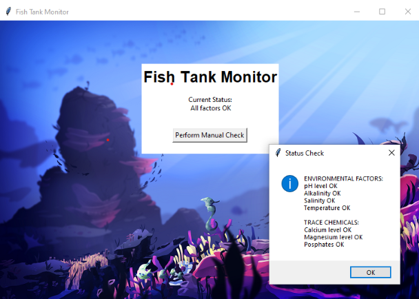
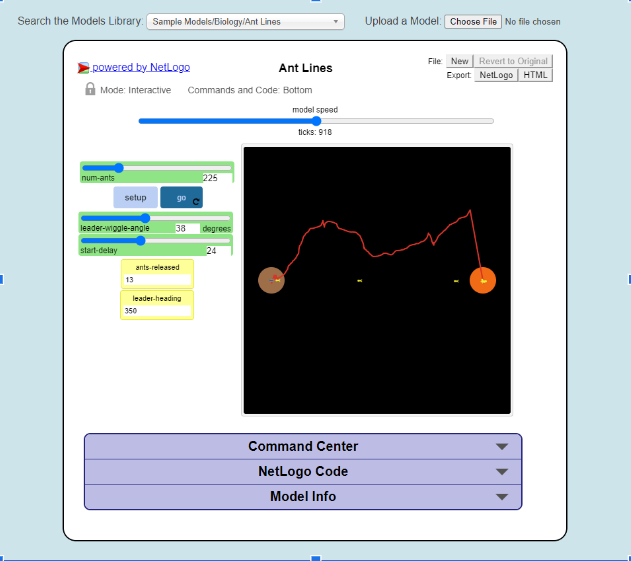

Home
Portfolio
About Me
This is my Portfolio Page!
1.1.9 Minion Catcher project.
This is our project that we made using turtle commands. The basics of the game is that you have a controlled character at the bottom of the screen that you can move left and right with your arrow keys. Our character at the bottom is a famous bodybuilder and he is attempting to collect the falling minions to save them from certain doom. We created the background rainbow by using striping commands and the fill commands and just swapping colors. Lastly, we have a timer and a scoreboard, each minion collected is worth 10 points and you have 30 seconds to collect as many minions as possible. When the 30 seconds runs out the program closes.
1.2.5 Llama Game Project

This game was based on arcade-style games and pong. Llama spitball requires two players, who can move up, down, left, right, and fire a spitball, to spit at each other until one of the players runs out of hearts. We used functions to define how collisions would be detected and to update the number of lives left, saving us from repetitive code.
Car Chasing Scrath Project
In this game you try your best to dodge the cop cars while trying to collect the coins. This fun and complicated game is used by two arrow keys, left and right, to control the two cars.
2.1.6 Fish Tank Project

In this project, I downloaded and decrypted encrypted files to implement in a software program called fishtank.py.
I then debugged the program so that there were no "Unexpected Error" messages in the terminal, and all of the values in the pop up would appear as "OK"!
4.1.4 Simulation Project

In this project, The Biology/Ant Lines model simulates how an ant colony might burrow to another nest based on different variables such as number of ants, leader-wiggle-angle, and the delay between each ant.
3.1.6 Rover Phone Home Project